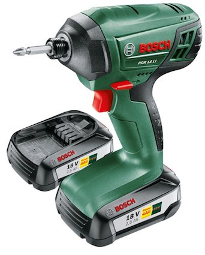
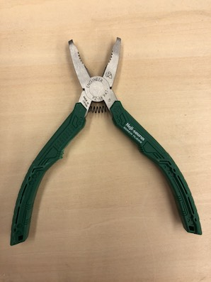
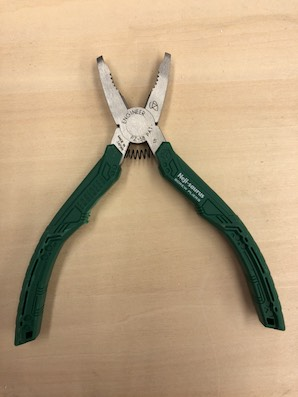
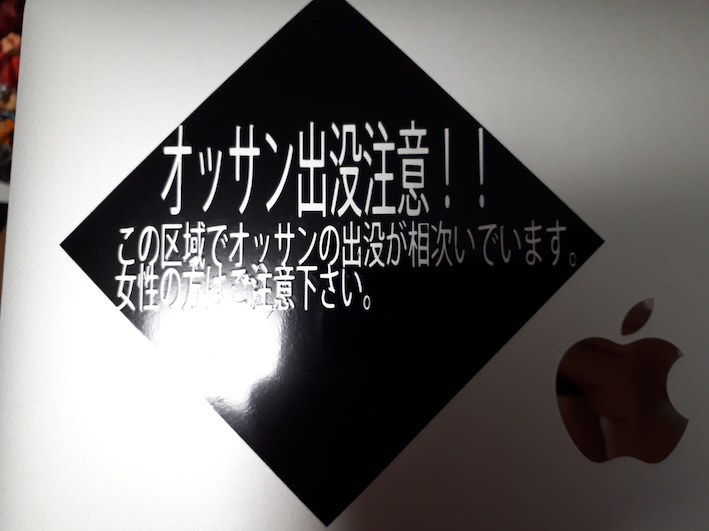
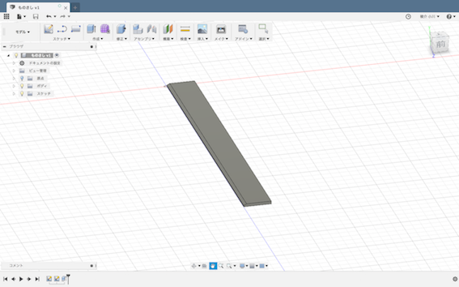

素材・材料学演習：１
Fabble
素材・材料学演習：１
5月11日（金）（電動手工具等）
自分の仕事
固定・把握
班で使用した道具
インパクトドライバー

G型クランプ
小型バイス
大型バイス
 ネジザウルス

ネジザウルス

したこと
G型クランプで色々な物を潰した。
ネジザウルスで埋め込まれていたネジを引っこ抜いた。
インパクトドライバーでネジを締めたり抜いたりした。
潰した物
ガラケー
ペットボトル（本体、飲み口、キャップ）
リポビタンDの金属キャップ
ウルトラファクトリーの工房で見た物、道具
ヴァイスプライヤー
大型のヴァイス
感想
今回の授業で色々な道具を見たり、実際に使ったりして、工具にも自分の知ってい
た物は全体の中のほんの一部であり、今日だけでも見たことも無いものがいっぱい出てきてビックリした。
特に自分が使った道具は、G型クランプであり、
様々な物を人間の握力では潰すことの出来ないレベルまで潰している中で、
新しい発見がたくさんあったし面白かった。
・6月15日（金）（デジタルファブリケーション）
使った機材、その機材を使って何をしたか。
今回、僕の班はカッティングプロッターを使ってオリジナルのステッカーを作った。
作ったステッカー

詳しくはトップページのカッティングプロッターをチェック！
・デジタルファブリケーション（補講）
カッティングプロッターの次は刺繍ミシンを使ってオリジナルな刺繍をした。
作った刺繍
 詳しくはトップページの刺繍マシンをチェック！
詳しくはトップページの刺繍マシンをチェック！
・Fusion
Fusionを使って、自分のものを3DCADで作ってみた。
作ったもの

どのようにして作ったか
先にものさしを横からみたときの平面でどこが何センチかを正確に設定し形作り、
それをものさしの実際の長さに合わせて伸ばした。
感想
初めて3DCADに触れてみたけど初めてだからか、なかなか思うようにいかなかったけど、完成した時の達成感は
大きかった。